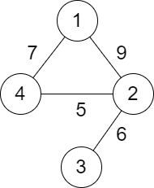
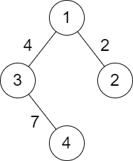

| Category | Difficulty | Likes | Dislikes |
|---|---|---|---|
| Algorithms | Medium | 1888 | 322 |
depth-first-search | breadth-first-search | union-find | graph
bloomberg | google | amazon | unbxd
You are given a positive integer n representing n cities numbered from 1 to n. You are also given a 2D array roads where roads[i] = [ai, bi, distancei] indicates that there is a bidirectional road between cities ai and bi with a distance equal to distancei. The cities graph is not necessarily connected.
The score of a path between two cities is defined as the minimum distance of a road in this path.
Return the minimum possible score of a path between cities 1 and n.
Note:
1 and n multiple times along the path.1 and n.
Example 1:

Input: n = 4, roads = [[1,2,9],[2,3,6],[2,4,5],[1,4,7]]
Output: 5
Explanation: The path from city 1 to 4 with the minimum score is: 1 -> 2 -> 4. The score of this path is min(9,5) = 5.
It can be shown that no other path has less score.Example 2:

Input: n = 4, roads = [[1,2,2],[1,3,4],[3,4,7]]
Output: 2
Explanation: The path from city 1 to 4 with the minimum score is: 1 -> 2 -> 1 -> 3 -> 4. The score of this path is min(2,2,4,7) = 2.
Constraints:
2 <= n <= 1051 <= roads.length <= 105roads[i].length == 31 <= ai, bi <= nai != bi1 <= distancei <= 1041 and n.